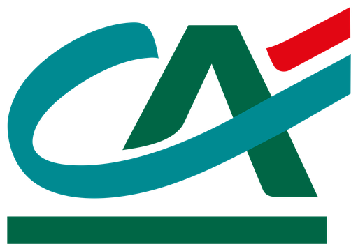

Banca
Bonus Crédit Agricole 50€
50€Buono Regalo Amazon.it
Apri il Conto Online con la carta di debito Visa entro il 02/11/2026, fai una transazione con la carta entro 30 giorni dall'apertura e ricevi 50€ in Buono Regalo Amazon.it. Ci sono scaglioni aggiuntivi legati allo stipendio e alla spesa con la carta.
Come ottenere il bonus Crédit Agricole: procedura passo-passo
- Apri il Conto Online Crédit Agricole dall'invito. Serve essere nuovo correntista del Gruppo Crédit Agricole Italia.
- Inserisci il codice promozionale nel form di apertura: se apri senza, il bonus può non essere riconosciuto e non si recupera dopo.
- Nella stessa richiesta sottoscrivi la Carta Visa Debit: senza carta la promo non parte. Tutto entro il 02/11/2026.
- Attiva transazioni online e 3D Secure (servono le credenziali che arrivano per posta).
- Fai almeno 1 transazione con la carta, di qualsiasi importo, entro 30 giorni dall'apertura effettiva del conto. Valgono POS, wallet digitali ed e-commerce. I prelievi non contano, e nemmeno le spese stornate o annullate.
- Dopo la verifica della banca il buono da 50€ in Buono Regalo Amazon.it compare nell'app, nella sezione CA Club: va richiesto da lì, non arriva da solo. Il codice Amazon lo trovi poi in «Storico Premi».
✅ Buono a sapersi
- L'operazione a premi «Invita un amico in Crédit Agricole – Agosto 2026» è valida dal 31/07/2026 al 03/01/2027, e la finestra per chiedere l'apertura del conto si chiude il 02/11/2026.
- La Carta Visa Debit è obbligatoria: sceglila in fase di apertura.
- Scaglioni aggiuntivi: +100€ con accredito di stipendio o pensione; +50€ con 1.000–1.999,99€ di spesa con la carta oppure +100€ da 2.000€ in su, sempre entro 30 giorni dall'apertura. Tutti in Buoni Regalo Amazon.it.
- Se accrediti lo stipendio, il bonifico deve avere causale ABI 27, SALA o PENS: con una causale generica la banca non lo riconosce.
⚠️ Dove si perde il bonus
- 30 giorni per la prima transazione. Partono dall'apertura effettiva del conto, non dalla richiesta: se la carta arriva tardi, usala appena attiva.
- Tieni il conto e la carta attivi fino alla verifica finale della banca, prevista a fine operazione (03/01/2027): chi chiude prima perde il buono.
- Sono esclusi i già clienti del Gruppo Crédit Agricole Italia, chi ha chiuso un conto Crédit Agricole Italia dal 01/01/2021 e i dipendenti del Gruppo.
- Il buono va richiesto in app, nella sezione CA Club, entro i termini del regolamento: se non lo richiedi lo perdi. Attiva le notifiche e controlla lo spam della mail indicata in apertura.
Perché Crédit Agricole
Basta una transazione con la carta Visa, di qualsiasi importo, e il buono arriva senza fare altro.
👍 Pregi
- Una sola spesa, importo libero
- Scaglioni extra con stipendio
- Conto online a zero spese
Ricevi il link ufficiale su WhatsApp →
Il bonus è erogato direttamente da Crédit Agricole. GoatLink non chiede alcun pagamento.
Domande frequenti sul bonus Crédit Agricole
Quanto si guadagna con Crédit Agricole?
50€ in Buono Regalo Amazon.it aprendo il Conto Online con la Carta Visa Debit. Ci sono scaglioni aggiuntivi: +100€ con accredito stipendio o pensione e +50€ con 1.000–1.999,99€ di spesa con la carta oppure +100€ da 2.000€ in su, sempre entro 30 giorni dall'apertura del conto.
Entro quando devo aprire il conto?
La finestra per chiedere l'apertura si chiude il 02/11/2026. L'operazione a premi «Invita un amico in Crédit Agricole – Agosto 2026» resta valida fino al 03/01/2027, ma senza richiesta entro il 02/11/2026 non si partecipa.
Quale carta devo scegliere?
La Carta Visa Debit, obbligatoria per il bonus. Va selezionata in fase di apertura: senza carta la promozione non parte.
Cosa conta come transazione valida?
Una sola transazione con la carta, di qualsiasi importo, entro 30 giorni dall'apertura del conto: pagamenti POS, wallet digitali o acquisti online. Non contano i prelievi, né le spese stornate o annullate.
Cosa serve per l'extra stipendio?
Un accredito con causale ABI 27, SALA o PENS. Con una causale generica, anche se il bonifico riporta la parola «stipendio», la banca non lo riconosce.
Chi è escluso dalla promozione?
Chi è già cliente del Gruppo Crédit Agricole Italia, chi ha chiuso un conto Crédit Agricole Italia dal 1° gennaio 2021 e i dipendenti del Gruppo. La promozione è riservata ai nuovi correntisti.
Come ricevo il buono Amazon?
Dopo la verifica della banca il buono compare nell'app Crédit Agricole, nella sezione CA Club, e va richiesto da lì. Entro qualche giorno dalla richiesta trovi il codice Amazon.it in «Storico Premi».
Ultimo aggiornamento: